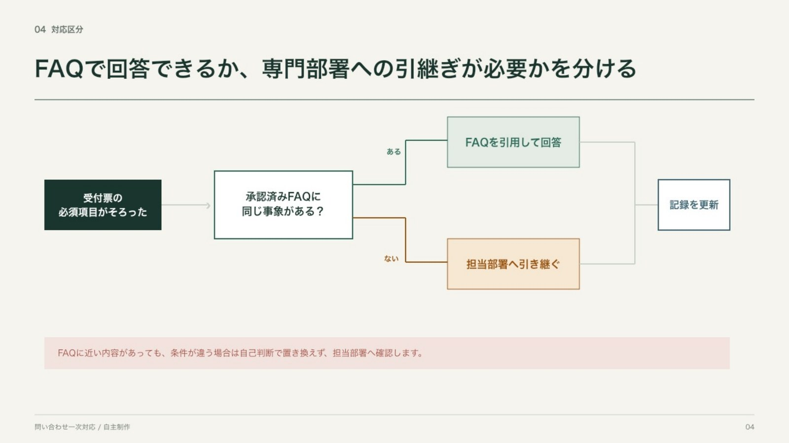
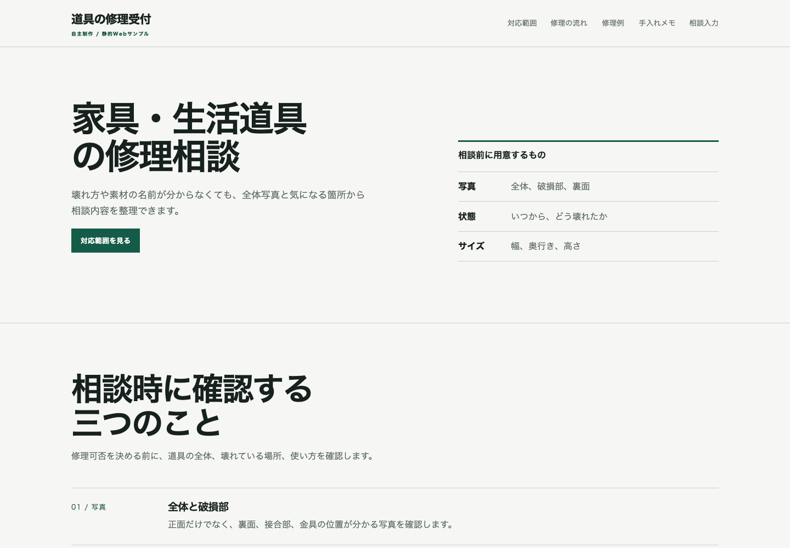

01 / PowerPoint / 6ページ
原稿を、読める順番へ整える
想定テンプレートの色とヘッダーを保ち、長い段落を行動・相談先・完了条件へ分けました。表は画像にせず、PowerPoint上で編集できる表として作り直しています。
- 入力
- 想定テンプレートと原稿
- 判断
- 変えない規則を先に固定
- 納品
- PPTX・表示確認用PDF
自主制作ポートフォリオ
PowerPointの整形、業務マニュアル、提案資料、小規模な静的Webを制作します。見た目だけでなく、読む順番、編集しやすさ、確認すべき条件まで整理します。
制作例 4件
各ケースで、想定した入力、整理した内容、編集可能な成果物、確認できていない範囲を分けました。
01 / PowerPoint / 6ページ
想定テンプレートの色とヘッダーを保ち、長い段落を行動・相談先・完了条件へ分けました。表は画像にせず、PowerPoint上で編集できる表として作り直しています。

02 / PowerPoint / 7ページ
受付票、FAQで回答できる条件、担当部署へ渡す条件、返信文、完了前の確認を一続きにしました。新任者が「次に何を確認するか」を追える構成です。

03 / PowerPoint / 8ページ
工事写真の登録と確認を題材に、情報のひも付き、撮影者と確認者の役割、試行前に決める項目を整理しました。固定日程や効果数値は置いていません。

04 / HTML・CSS・JavaScript / 6ページ
対応範囲、受付工程、架空の修理例、手入れメモ、相談入力を6ページに分けました。共通ナビ、モバイルメニュー、キーボード操作まで実装しています。
対応範囲
材料とゴールが確認できる、小さく区切った制作に向いています。
いただくもの 原稿、既存資料、テンプレート、変更してよい範囲
納品 編集可能なPPTX、必要に応じて確認用PDF
いただくもの 手順、判断条件、担当、例外、現行資料
納品 手順・分岐・チェックを整理したPPTX
いただくもの 目的、読み手、原稿、前提条件、未確定事項
納品 構成・図解・表を含む編集可能なPPTX
いただくもの ページ構成、文章、画像、必要な操作
納品 HTML・CSS・JavaScript。CMS、決済、バックエンドは対象外
相談から納品まで
ページ数、素材の状態、テンプレート、納品形式、確認者を整理します。
契約後、代表ページまたは構成案で、文字量と見せ方を確認します。
合意した方向に沿って制作し、未確定事項は推測で埋めず確認事項として残します。
表示、リンク、編集可能性、ファイル構成を確認し、指定形式で渡します。
ご相談前に
ご相談は、このページを案内しているCrowdWorks等のプロフィールからお願いします。制作前の無料デザイン案や、無制限修正は行っていません。